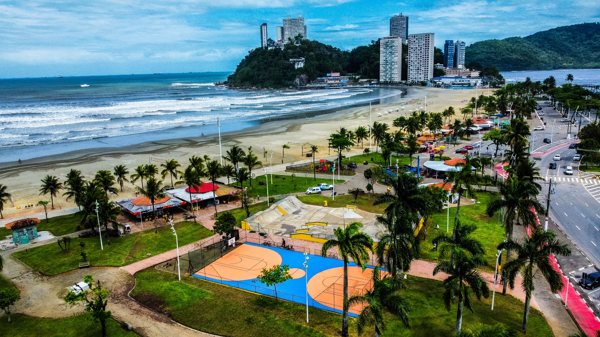
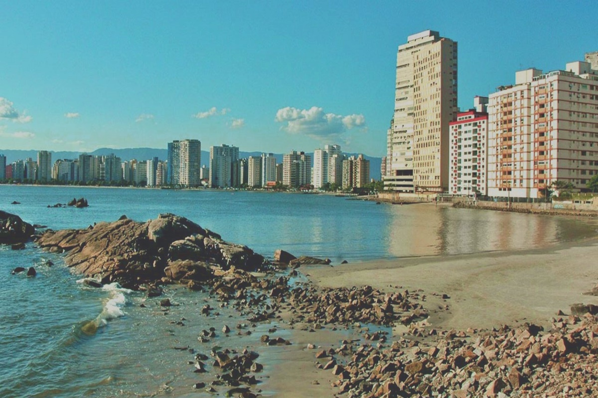
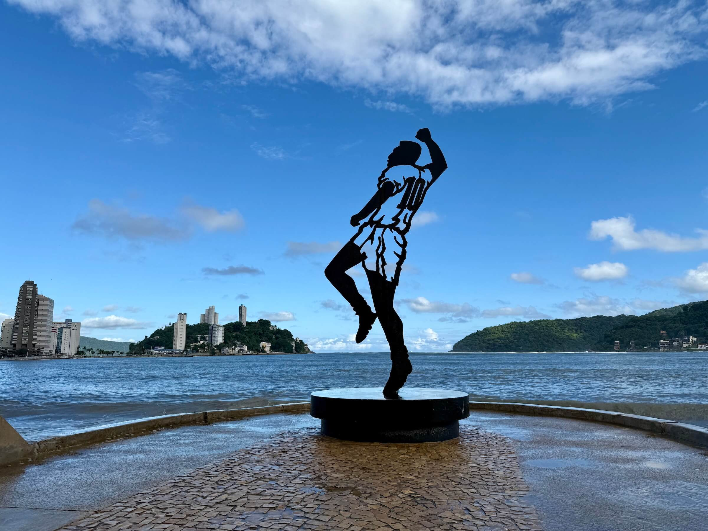

SÃO VICENTE
História de São Vicente
São Vicente tem um papel fundamental na história do Brasil. Foi fundada em 22 de janeiro de 1532 por Martim Afonso de Sousa, sendo reconhecida como a primeira vila do Brasil.
A cidade foi o primeiro núcleo organizado da colonização portuguesa, com instalação de governo, agricultura (principalmente cana-de-açúcar) e estrutura administrativa.
Um dos eventos mais importantes foi a realização da primeira eleição das Américas, marcando o início da organização política no país.
Com o passar dos séculos, perdeu protagonismo econômico para cidades vizinhas como Santos, mas manteve sua enorme importância histórica e cultural.
Curiosidades
- É considerada a primeira cidade do Brasil.
- Foi palco da primeira eleição das Américas.
- Possui praias e também áreas de mangue e natureza preservada.
- Tem a maior ponte pênsil do Brasil, um cartão-postal famoso.
- Abriga um teleférico com vista incrível da cidade.
Pontos Turísticos
Locais importantes
- Ponte Pênsil de São Vicente – Símbolo da cidade e marco da engenharia brasileira.
- Ilha Porchat – Vista panorâmica incrível da região.
- Teleférico de São Vicente – Passeio turístico até o Morro do Voturuá.
- Parque Ecológico Voturuá – Área verde com animais e lazer.
- Marco Padrão – Monumento histórico que marca a fundação da vila.
Praias
- Praia do Gonzaguinha
- Praia do Itararé


